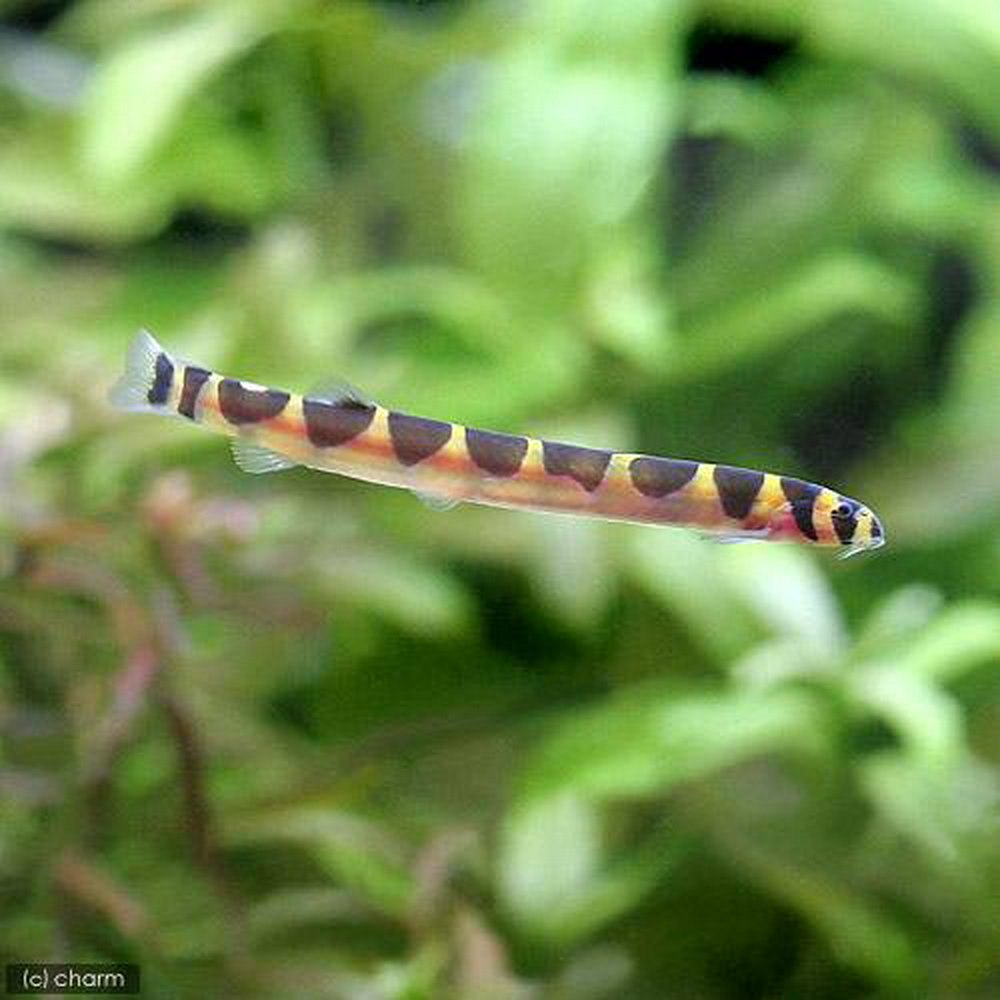
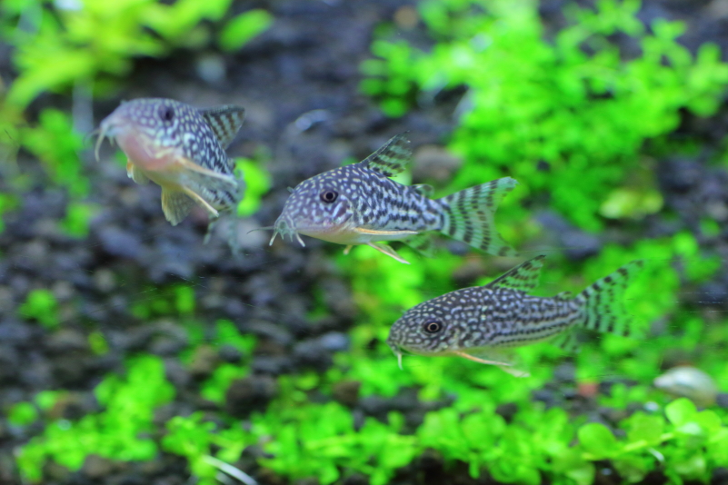
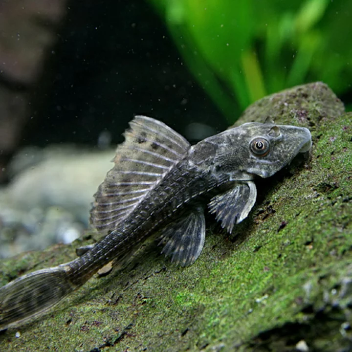
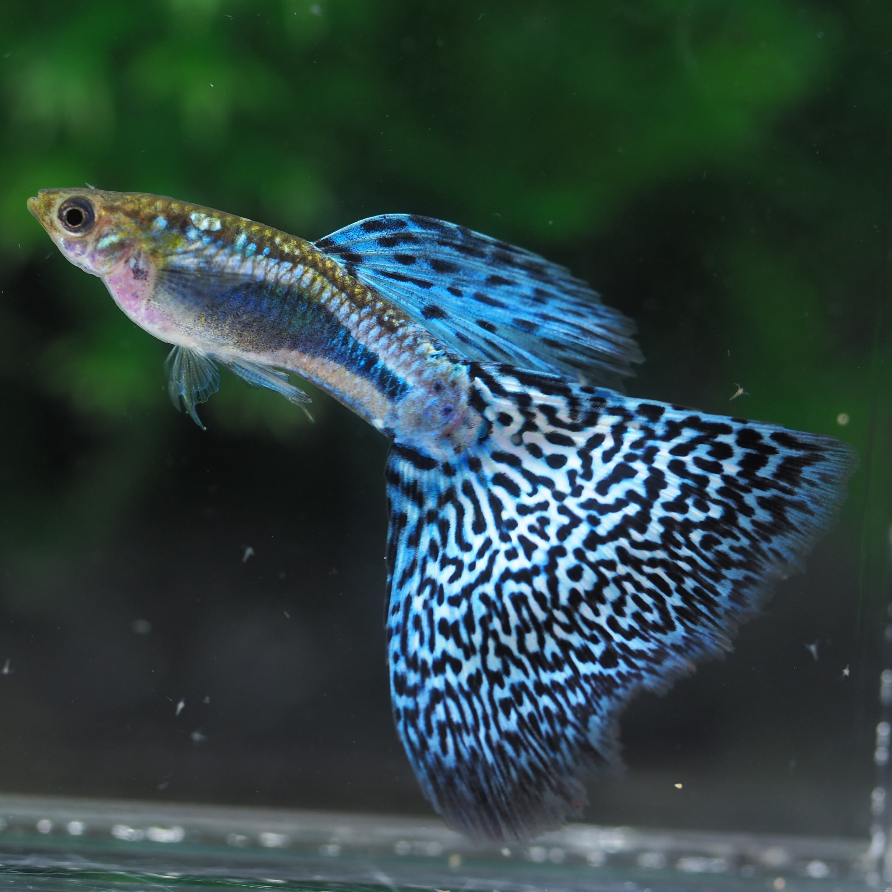
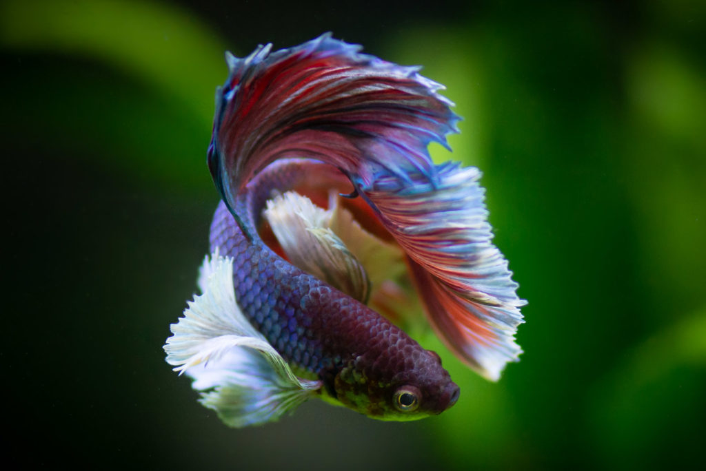

| 名前 | 学名 | 特徴 | ||
|---|---|---|---|---|
|  | クーリーローチ | Pangio kuhlii | 夜行性で大人しく、平均して5～10年ほど生きます。かわいいです。 | |
|  | コリドラス | Corydoras | 大人しい個体が多く、平均して5～10年、飼育環境が良ければもっと長生きします。 長生きしてほしいです。 |
|
|  | プレコ | Hypostomus plecostomus |
吸盤型の口で壁面に張り付き苔を食べます。平均して10～30年生きます。 大きいサイズだと軽く1mを超える種類もいるので怖いです。 |
|
|  | グッピー | Poecilia reticulata | 臆病な個体が多く、数匹の飼育でも群泳がみられます。 寿命は平均して1年半程度で他の魚と比べると短いですが、目を離すと爆発的に増えるのでほんっといい迷惑です。 |
|
|  | ベタ | Betta splendens | 攻撃的な個体が殆どで、多頭飼いすると冗談にならないくらいの喧嘩を始めます。 寿命は平均して3年～5年で、個体によっては冗談にならないくらいの金額差が生まれます。 |